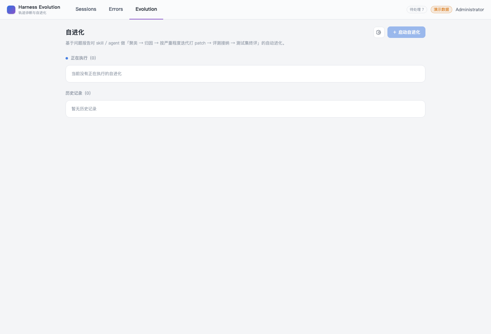
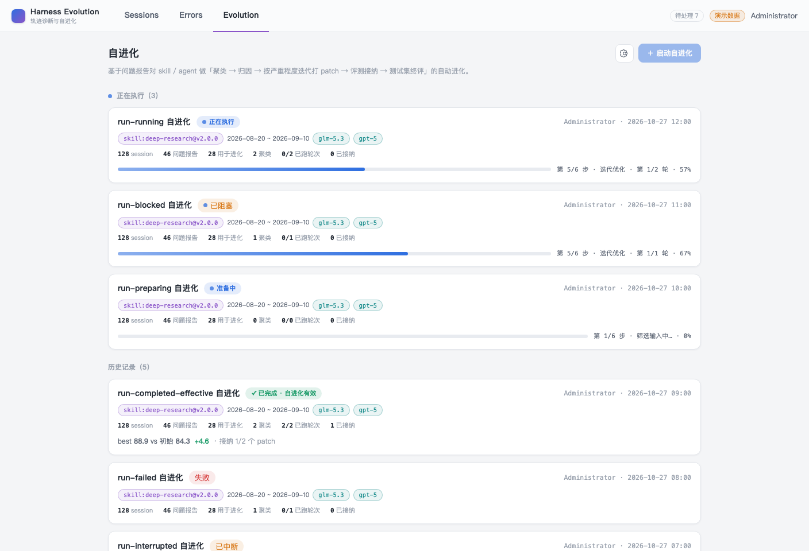
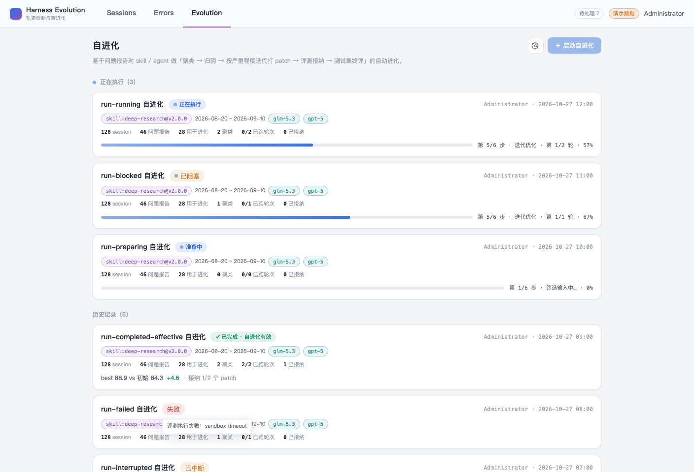
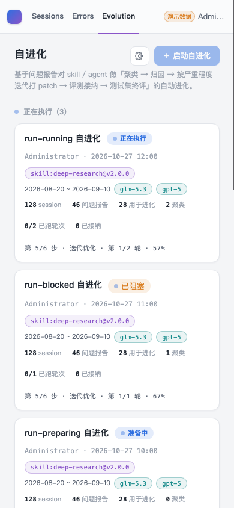
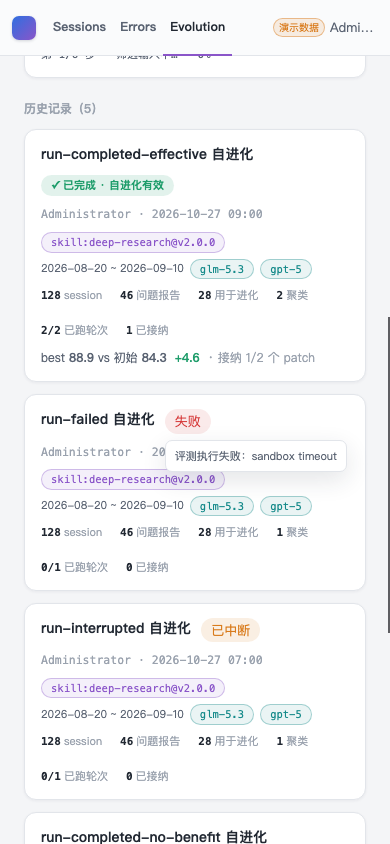
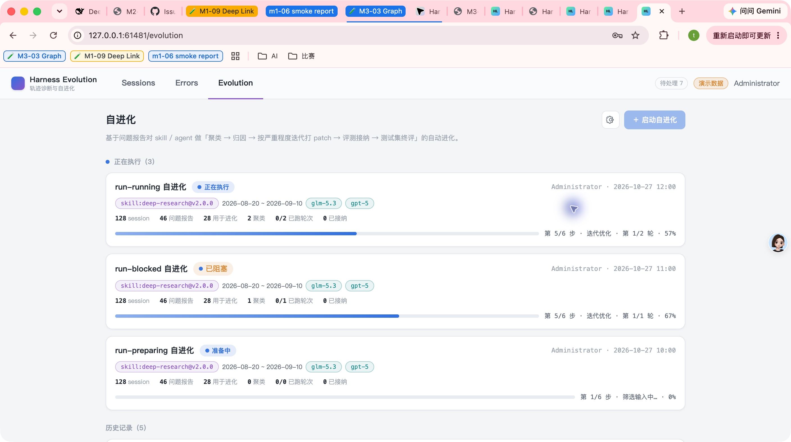
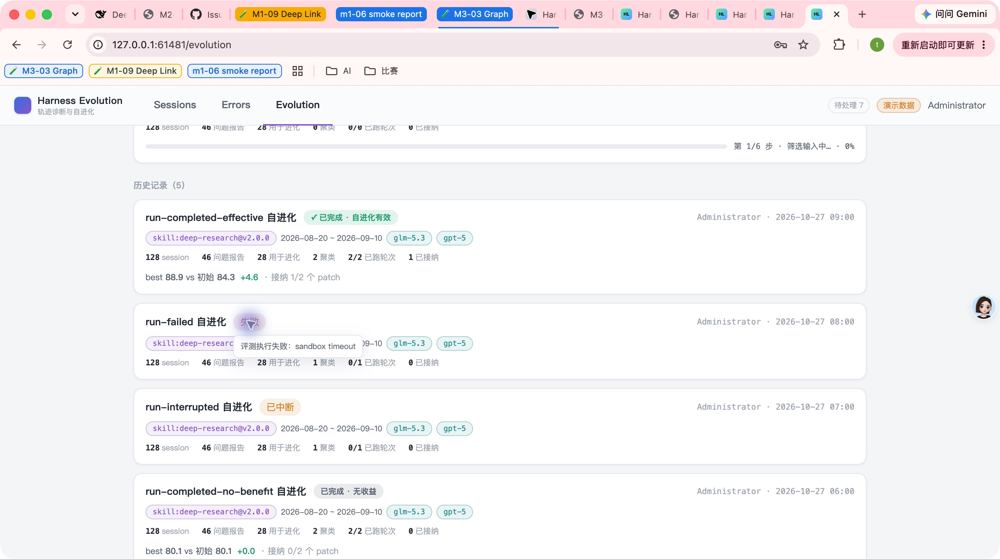

- Issue
- #53 · M5-04 run list
- PR
- #128
- Validation commit
- d8ce69a
- CI
- run 40421127822 · 3/3 green
- Runtime
- FastAPI + Vite + Google Chrome
- Database
- 临时 SQLite fixture
- Data
- running 3 · history 5
- Evidence
- CDP 断言/截图 + 原生 Computer Use
Harness Evolution · PR #128 · validation on d8ce69a
M5-04 自进化运行列表 GUI 集成冒烟
在临时 SQLite、真实 FastAPI/Vite 与 Google Chrome 上完成运行列表集成验证。后端分组、排序、阶段文案、百分比、轮次、接纳数、创建人和终评事实在前端只读消费；页面严格复用原型的 1080px 容器、运行分组、卡片、语义 chip/badge、6px 进度条和终评摘要。8 个场景全部通过，包含空态、八种状态文案、键盘/触屏可达错误摘要、390px 和原生 Computer Use。
8冒烟场景
8通过
3PR检视缺口已修复
0未解决缺陷
0非预期控制台错误
Environment and Artifact
2026-10-27 · macOS · Google Chrome · FastAPI + Vite + SQLiteScenario Matrix
8 pass| # | 场景 | 结果 | 观测 | 证据 |
|---|---|---|---|---|
| 01 | 真实空列表 | PASS | 空库显示 running/history 两个明确空态；保留页头、配置齿轮和 M5-05 前禁用的 Launch。 | screenshots/01-empty-1408.png |
| 02 | 桌面运行列表 | PASS | running 3 张、history 5 张保持后端顺序；八种状态、创建人+时间、target/model chips、六项统计和 57% 进度均正确。 | screenshots/02-desktop-1408.png |
| 03 | 错误摘要桌面交互 | PASS | 失败 badge 为可聚焦 button；tooltip 显示“评测执行失败：sandbox timeout”，不显示 eval/push 阶段码，也没有常驻错误行。 | screenshots/03-error-tooltip-1408.png |
| 04 | 390px 响应式 | PASS | 八张卡在 390px 下改为单列，meta/chips/stats 自动换行，页面 scrollWidth 等于 clientWidth。 | screenshots/04-mobile-390.png |
| 05 | 触屏错误摘要 | PASS | 点击失败 badge 后 tooltip 完整落在 390px viewport 内，页面不产生横向溢出。 | screenshots/05-mobile-tooltip-390.png |
| 06 | 原生 Computer Use · 运行列表 | PASS | 原生 Chrome 登录后看到 3 个 running 与 5 个 history；状态、进度、创建人、时间、配置齿轮和禁用 Launch 均可访问。 | screenshots/06-native-desktop.png native-cua-evidence.json |
| 07 | 原生 Computer Use · 错误摘要 | PASS | 原生点击失败 badge 后仅显示脱敏错误摘要；没有机器阶段码或原型外错误行。 | screenshots/07-native-error-tooltip.png |
| 08 | Console / network | PASS | 管理员真实浏览器会话未捕获 warning、error 或未处理异常。 | cdp-evidence.json |
Issues and Observations
P2 错误摘要仅存在于不可聚焦 titleP2 completed 且 final 缺失被误判为无收益
P3 旧预览截图与最终 UI 漂移
错误摘要仅存在于不可聚焦 title
- Actual
- 失败/阻塞 badge 是 span，键盘和触屏用户无法可靠查看原因。
- Expected
- 错误 badge 支持 hover、focus 和点击/触屏，并通过 aria-describedby 关联 tooltip。
- Root cause
- 首版只把 error.message 放进 title 与 aria-label。
已修复 · 组件 + 真实 Chrome
completed 且 final 缺失被误判为无收益
- Actual
- final=null 时 badge 曾显示“已完成 · 无收益”。
- Expected
- 缺失终评应显示中性“已完成 · 终评未知”。
- Root cause
- 可选 final 被当作 verdict=false 处理。
已修复 · 状态回归
旧预览截图与最终 UI 漂移
- Actual
- 早期 tracked 截图仍显示已经删除的错误行。
- Expected
- 报告证据必须来自最终 UI，并由官方 renderer 生成。
- Root cause
- 预览截图早于 review 修复提交。
已替换 · 最终 smoke 资产
Evidence
7 screenshots






Automated Coverage Assessment
4 areas reviewed| 区域 | 覆盖 | 结论 | 建议 |
|---|---|---|---|
| 后端事实 | API + repository + MySQL/SQLite | 分组、排序、阶段、百分比、轮次、接纳、统计、final 和 createdBy 均由后端生成；MySQL CI lane 通过。 | 新增 run 字段时继续从 RunCard contract 和 repository 聚合测试开始。 |
| 原型视觉 | CDP 计算样式 + 原生 CUA | 1080px 页面、分组标题、运行卡、紫/青 chips、状态 badge、6px 进度条和终评摘要均一致。 | 原型变化时更新共享 token 和对应 computed-style 断言。 |
| 可访问性与响应式 | 组件 + Chrome 390px | 错误摘要支持 focus/click/touch，tooltip 不越界；页面无横向滚动。 | 后续运行详情卡片继续复用相同状态与错误语义。 |
| 回归门禁 | Vitest + 全量 Chrome E2E + CI | Web 309 passed / 1 skipped，覆盖率 96.28%；全量 E2E 15/15；CI run 40421127822 三项全绿。 | 报告提交后仍需确认最终 CI。 |
Conclusion
冒烟通过M5-04 在真实栈和原生 Chrome 上通过 8 个场景；PR 检视发现的错误可达性、终评未知和旧证据问题均已闭环。
- 运行列表已按原型替换占位页，前端不重排或重算后端事实。
- 六种状态及 completed no-benefit/final-unknown 变体都有真实浏览器证据。
- 错误摘要支持鼠标、键盘和触屏，且不泄漏内部阶段码。
- 后续 M5-05 启动向导与 M5-07 运行详情继续沿同一原型和事实边界实现。
证据源：原生 Computer Use、Chrome DevTools Protocol、真实 FastAPI/Vite/SQLite、Vitest、MySQL CI lane 与全量浏览器 E2E。HTML 由 report-data.json 渲染生成。